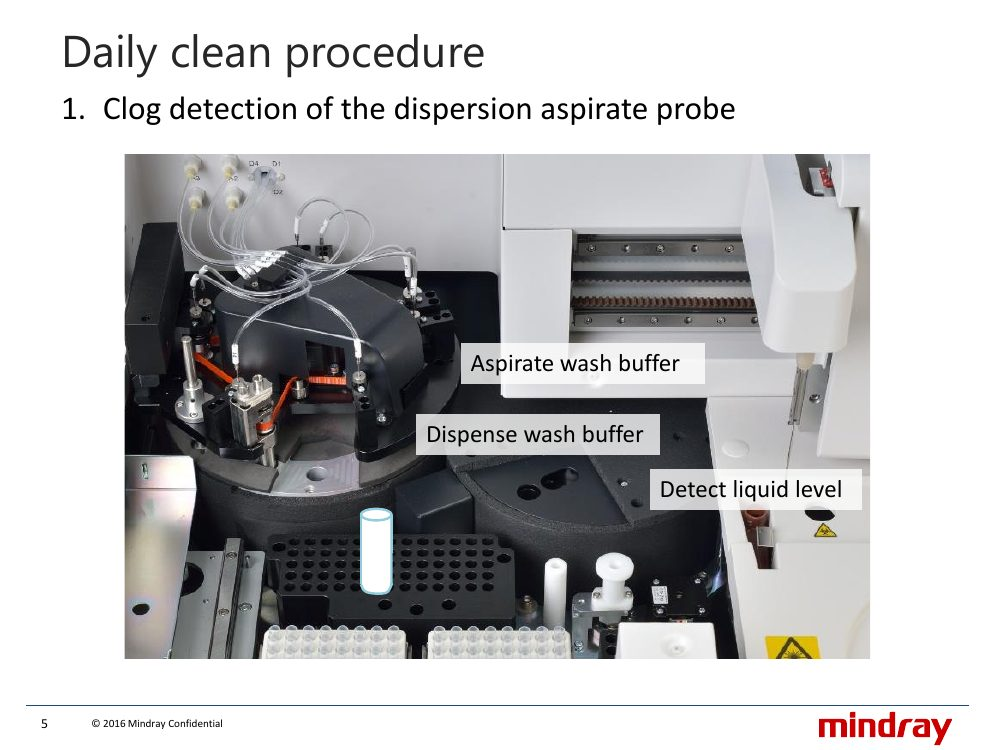
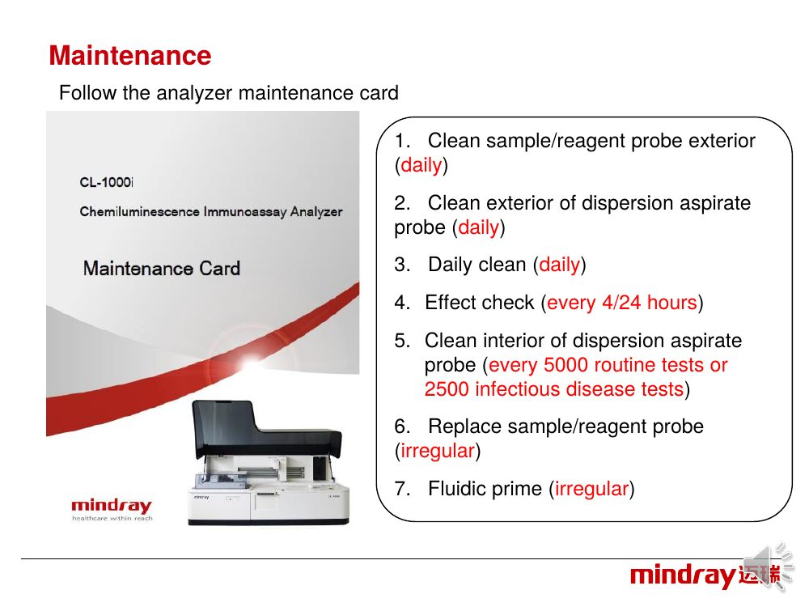

Maintenance
What to do daily, weekly, monthly and as needed, how to record it, and the step-by-step for cleaning the dispersion probes and tubes.
7.1 Maintenance schedule
Counted from the date you perform it. When the countdown reaches 0 the item turns yellow on the Utility button, Maintenance tab, Scheduled Maintenance tab and the item itself. Frequencies assume 5 hours a day: 600 tests per day, 15,000 per month.
| When | Task |
|---|---|
| Daily (1 day) | Check waste tank connection · check consumable status · check syringe for leaks · check probe (water must shoot straight from the tip) · clean probe exterior (gauze with alcohol, then distilled water) · clean exterior of dispersion aspirate probes · Daily clean (auto, about 20 min) · Effect check (every 4 or 24 h per the precaution deck) |
| Weekly (8 days) | Replace or clean the four dispersion aspirate probes (A1–A4). Unscrew the round nut counter-clockwise, lift out, do not bend. Also clean probe D and the wash well (CL1000i_training deck). Replace probe wash solution CD80 weekly |
| Monthly (31 days) | Clean dust screens (main power off; reinstall only when fully dry) · clean wash well · wipe dispense probes and tubes · clean vortexer hole |
| Three-month (91 days) | Wash buffer bubble optical coupler calibration (more than 1/3 tank of wash buffer) |
| By count | Clean interior of dispersion aspirate probe every 5000 routine tests or 2500 infectious disease tests |
| As needed | Fluidic prime (when patient or QC results are poor, or effect check low; for substrate prime 10 times) · clean analyzer panels · clean reagent carousel · clean probe interior · replace syringe, probe · remove bubbles from syringe · discard cuvettes · clean wash buffer tank cap · barcode maintenance |
| Part life | Pump tube 6 months · syringe 3 months · dispersion aspirate probe assembly weekly · probe when damaged or bent · substrate spike when damaged |
- Record each task:
Utility → Maintenance → Maintenance → Scheduled Maintenance, tick Select, OK. Use Log to add comments. - If Auto maintenance fails, fix the cause and repeat it before running, or the system will not allow runs. It needs spare supplies: at least 10 tests of substrate, at least 1 cuvette box on board, and room for 30 tests in the waste bin (CL1000i_training deck).
- Run calibration or QC after any maintenance. If an effect check still fails, do not test until it is fixed.


7.2 Clean dispersion probes and tubes
The four dispersion aspirate probes (A1–A4) remove unbound material in the magnetic separation (chapter 3). If they are dirty or clogged, wash solution is left behind and the result is affected; contaminated aspirate probes cause carryover; crystals on the dispersion dispensing probes make washing insufficient and the substrate volume inaccurate. All three jobs start from the same command.
Graphic built from: CL-1000i Operation manual §15.4.6 (daily, steps 1–12), §15.5.1 (weekly), §15.6.3 (monthly)
| Task | When | What you do to the probe | Materials | Tick in Scheduled Maintenance |
|---|---|---|---|---|
| Clean exterior of dispersion aspirate probes (A1–A4) | Daily | Remove one probe at a time, wipe the outside from top to bottom with tissue wet with DI water until fully clean, refit, check it springs back. New tissue for each probe. | Dust-free tissue, DI water | Daily › Clean Exterior of Dispersion Aspirate Probe |
| Replace / clean aspirate probes | Weekly | Swap each probe for a clean spare (also disconnect and reconnect its quick joint on the panel behind the carousel), then prime and clean the removed probe for next week (below). | 4 clean probes, gauze or alcohol cotton, ethanol, DI or distilled water, CD80, 3 beakers, dispersion cleaning tool (unclogging device and syringe), clean sealed bag | Weekly › Replace/Clean Aspirate Probes |
| Wipe dispense probes / tubes | Monthly | Remove each dispensing probe (keep the soft tube connection tight, do not drop it), look at the outside of the tip near the hole, wipe off crystals with gauze wet with DI water, refit and check the soft tube is not loose. | Clean gauze, DI water | Monthly › Wipe Dispense Probes/Tubes |
| Clean interior of dispersion aspirate probe | By test count check | Every 5000 routine tests or 2500 infectious disease tests (maintenance card). The manual covers interior cleaning inside the weekly task; use the syringe method below. | As weekly | Follow the card; record in the log |
Sources: Operation manual §15.4.6, §15.5.1, §15.6.3 and Table 15.2 · SD-APP-37 Precautions PPT slide 9 (maintenance card frequencies) · CL1000i-TH manual §6.2 (weekly)
Weekly: clean the removed probe
- Wipe the outside with gauze or alcohol cotton wet with ethanol. Clean the inside with the unclogging device.
- Fit the syringe tool (accessory kit) to the probe quick joint. Put the other end in a beaker of CD80 and push and pull the plunger more than 10 times.
- Lift the tip above the liquid and push the liquid out. Repeat in a beaker of deionized or distilled water: aspirate, then discharge into an empty beaker, at least 10 times.
- Disconnect from the syringe, swing the probe and tube to shake out the liquid, dry the outside with lint-free gauze. Keep the tube connection tight throughout.
- Repeat for the other probes. Dry them 1 hour in a clean ventilated place, then keep each in a clean sealed bag.
Operation manual §15.5.1 steps 13–17
After fitting and safety
- After a weekly swap run
Maintenance Command → Fluidic Prime, tick Dispersion Cycle, set the cycle to 5, Execute. Watch the probes while it primes: they must be fitted correctly with no tube leakage. - Do it only when system status is Incubation or Standby.
- The probe tip is sharp: bent or damaged probe = replace at once, or results become unreliable. Wear gloves, lab coat, goggles if needed.
- A loose guide tube or a leak: call customer service, because the leak can cause system failure.
- Related automatic checks: Daily clean tests the probes for clogs, then soaks them in CD80 (chapter 8). Clogged probes there mean unclog, check the connector for leakage and the pump tube, then repeat Daily clean.
Operation manual §15.5.1 · SD-APP-38 Maintenance PPT (Daily clean: clog detection, enhanced wash) · CL1000i-TH manual §6.1.6
Files behind this chapter: CL-1000i Operation manual ch.15 (§15.4.6, §15.5.1, §15.6.3, Table 15.2) · SD-APP-38 Maintenance PPT · SD-APP-37 Precautions PPT slide 9 (maintenance card) · CL1000i-TH manual §6 · CL1000i_training deck